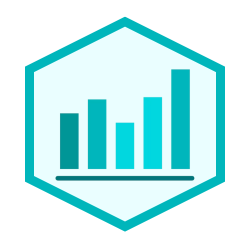

Estadística Descriptiva

Profesor
- Rodrigo Asún
- Departamento de Sociología FACSO
- rasun@uchile.cl
Equipo docente
- Daniela Olivares
- danielaolivarescollio@gmail.com
- Andreas Laffert
- andreas.laffert@ug.uchile.cl
Información del curso
- Jueves
- Marzo–Julio, 2023
- 8:30 AM - 11:45 AM
- Aulario A - sala 7 y 8
- Prácticos Vía Zoom
Contacto
A través de correo o U-Cursos